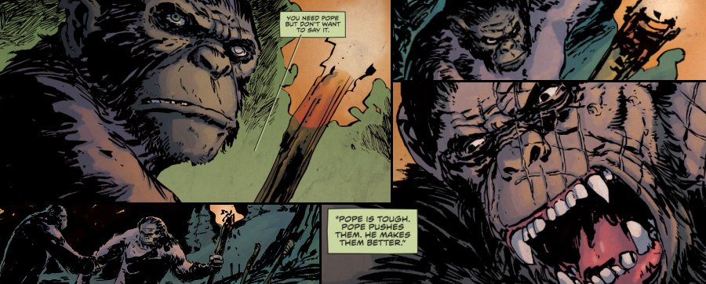
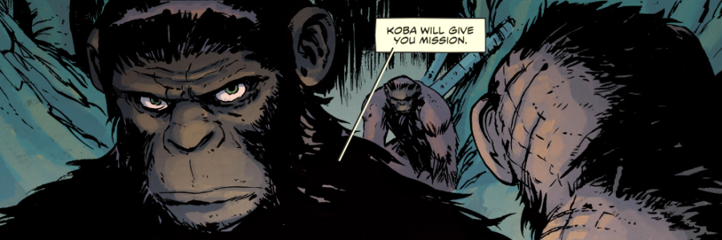

ritten by Michael Moreci and illustrated by Dan McDaid, Dawn of the Planet of the Apes is Boom! Studios’ 6-issue comic miniseries that expands the now legendary world of the Planet of the Apes, in the process dealing with the classic and archetypal questions of the post-apocalyptic subgenre, such as: what does it mean being human, what is the true function of society and civilization, and whether being civilised is even possible in the unforgiving post-apocalyptic world.
Bridging the 10-year gap between the Rise of the Planet of the Apes and Dawn of the Planet of the Apes films, the miniseries charts the fall of humanity and the rise of Caesar’s civilization. The narrative of the comic toggles between two separate storylines: While the apes of the world have yet to evolve as a fully intelligent species, Caesar is trying to find a way to unify them to one cause. On the other side of the country, Malcolm ventures into the slowly disintegrating Americas with his wife Rita and son Alex, struggling to protect them from other survivors who have grouped into lawless, marauding gangs, prowling the countryside and rummaging through abandoned houses for anything edible or usable. World powers will shift as one civilization, that of the humans, collapses, slowly giving way to a new one – civilization of apes.
The first storyline, that centres on Malcolm and his family, describes how Rita, who becomes infected with the genetically engineered virus ALZ-113 a.k.a. Simian Flu, is trying to hide her quickly deteriorating condition from her husband Malcolm and their son Alex. When Malcolm eventually finds out, Rita pleads with him to leave her behind so he and Alex may be safe, but he refuses to abandon her and they instead set out on a perilous journey with the aim to reach a medical research facility in Austin, rumoured to have a cure for the disease. On their way, they come into conflict with other survivors that are doing whatever it takes to stay alive in this harsh post-apocalyptic world, until they come across one bigger, better organised group led by a man called Shavers, where they find a temporary refuge. Shavers is trying to enlist Malcolm’s help in building a viable community and offers him a permanent home in their compound in return for becoming a sort of ‘resident engineer’. Malcolm refuses, as he wants to continue on his quest to find a cure for his sick wife. However, before they can resume their journey, the camp is attacked by human traffickers who abduct Alex. Shavers promises Malcolm to save his son from traffickers’ lock-up located on a ship, under the condition that he stays and helps them with their cause. The traffickers are defeated and Alex is freed, but Malcolm finally loses his gravely ill wife, who, not wanting to be a burden to her family, walks out into the night never to be seen again.
The second storyline in the meantime tells the story of Caesar’s group of sapient apes, who are slowly starting to lay the foundations of a new civilisation – civilization of simians. Even as new parents Rocket and Tinker celebrate the birth of their son Ash, and Caesar begins to think about more distant future for his fledgling colony, the group sees a rise of a new dominant male – Pope. His recklessness and frequent fights with other males concern Caesar who instructs his right hand, Coba, to send Pope on an exploratory mission to keep him occupied. Not long after departing, Pope and his band come upon an abandoned Zoo, with a resident population of a couple of dozen natural, unaltered apes. Pope confronts, and, using his superior intelligence, easily defeats, their Alpha male and takes over the remaining apes with the intention to build a personal army to try and challenge Caesar’s leadership. While most of the sapient apes in the forward party are bullied by Pope into obedience, two – Cora and Fifer, remain loyal to Caesar and set off to warn him. Just as they are departing, they are ambushed by Pope, who attacks Cora, preventing him from leaving, and spears Fifer, who however manages to climb on the horse’s back and flee. Badly injured Fifer makes it back to apes’ settlement where he warns Caesar, who dispatches Coba, and few others, to deal with the disobedient ape. Coba reaches the Zoo and challenges Pope to a fight. The two dominant males engage in an even fight that Coba very nearly loses, but eventually wins, spurred by the way Pope treats unaltered apes (calling them “dumb animals” just as Coba was called by his former human tormentors). Defeated Pope mocks his vanquisher, telling Coba that he is exactly like Caesar, and therefore unable to kill him (referring to Caesar’s avowal that “apes not kill apes”). Coba replies that he is neither like humans nor like Caesar (“Coba is Coba”), kills Pope, frees all the enslaved ‘natural’ apes and banished those who betrayed Caesar.

The Dawn of the Planet of the Apes comic book miniseries does a fairly good job of expanding the Planet of the Apes universe, alas, one cannot help but feel that the rather compelling narrative and intriguing set of new characters are slightly let down by some under-average illustrations.